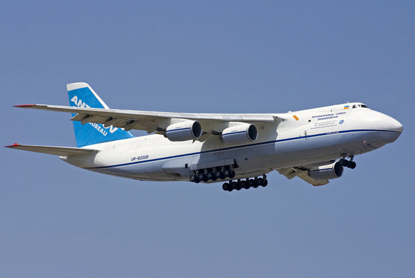
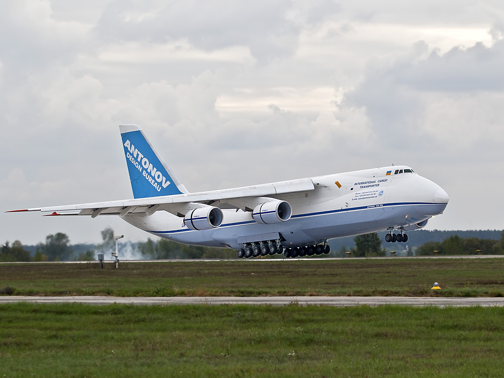

Ан-124 «Руслан» (Кодове ім"я НАТО — «Condor») — літак, який є найбільшим серійним вантажним літаком у світі, а до появи Ан-225 «Мрія» був найбільшим літаком. Перший політ дослідний зразок літака здійснив 24 грудня 1982 року в Києві. Вироблявся в СРСР спочатку на ДП Київський авіаційний завод «Авіант».
Було усього побудовано 55 літаків. На 2011 рік в реєстрах діючих — 46 машин (лише половина з них є цивільними). 36 літаків експлуатують в Росії (ВПС РФ — 22, авіакомпанії: "Волга-Дніпро" — 10, "Полёт" — 4), 7 — в Україні («Авіалінії Антонова»), 1 — в ОАЕ та ще 2 — в Лівії. 4 літака згинули в авіакатастрофах.
Ан-124 повернув СРСР лідерство у важкій транспортній авіації, позбавивши Lockheed C-5 Galaxy титулу найбільшого літака у світі. У 1985 році на літаку Ан-124 «Руслан» було встановлено 21 рекорд світу, в тому числі з вантажопідйому (171 219 кг на висоту 10750 м), а 6 травня 1987 року було встановлено світовий рекорд дальності перельоту замкнутим маршрутом (20 150,92 км).
Літаки Ан-124 використовуються для перевезення локомотивів, яхт, фюзеляжів літаків і багатьох інших великогабаритних вантажів. Ан-124 має систему присідання опор шасі, що дозволяє легко здійснювати завантаження.
Станом на 2005 р., сталося чотири катастрофи за участю літаків Ан-124, із загальною кількістю жертв 60 чоловік.
Цікаві факти* Літак Ан-124, що належить компанії Волга-Днепр, можна побачити у відеокліпі Guns N' Roses до пісні «Estranged», відео добре відоме через великий бюджет. Літак показаний в процесі відвантаження музичного обладнання.
* Український Ан-124 було зображено у фільмі про Джеймса Бонда Помри, але не зараз, хоча інтер'єр знімався у Іл-76.
* Літак компанії Волга-Днепр Ан-124 перевіз гігантського кита з Ніцци (Франція) у Японію; іншим рейсом він перевіз слона з Москви у Тайвань.
* Збірна пластикова модель літака Ан-124 у масштабі 1/72[8] випускається українською компанією ModelSvit. Ця модель у зібраному стані має розмах крил біля одного метру.
* Літак АН-124 української авіакомпанії «Авіалінії Антонова» помітно позаду Шона Райлі на початку програми World's Toughest Fixes[en] телеканалу National Geographic Channel.